Cómo armar tu CV
Qué incluir, cómo escribirlo y cómo darle formato.
Al final hay cuatro anexos cortos: foto, perfil online, carta de presentación y CV con IA.
Qué es un CV
Un documento de una hoja con tus datos, tus habilidades y tu experiencia.
Se envía por mail
Se deja impreso
Se carga en sitios de empleo
Desordenado o claro
- Texto corrido, sin secciones.
- Datos que no suman: fecha de nacimiento, jardín de infantes, el perro, los videojuegos.
- Tono informal y mail poco profesional.
- Experiencias sin resultados concretos.
- Secciones marcadas, con espacio entre bloques.
- Perfil breve con el objetivo.
- Experiencia y habilidades en viñetas, con palabras clave.
- Contacto completo y profesional.
Las 4 partes
Datos y perfil
Teléfono, mail profesional y zona. Dos o tres líneas sobre lo que podés aportar.
Experiencia
Trabajos o experiencias concretas, en viñetas. Sirven un negocio familiar o una actividad del colegio.
Educación
Colegio, título en curso o terminado y cursos extra que sumen.
Habilidades
Herramientas y aptitudes que realmente manejás: caja, Excel, atención al público, Canva.
También pueden ir cursos e idiomas.
Qué va y qué no
- Nombre y teléfono.
- Mail con tu nombre, sin apodos.
- Barrio o zona.
- Perfil breve.
- DNI.
- Edad y estado civil.
- Dirección exacta.
- Foto, salvo que el aviso la pida (ver Anexo A).
Cómo escribirlo
- Una sola hoja como máximo.
- Viñetas cortas, no párrafos largos.
- Negrita solo en herramientas, puestos y logros.
- Lo más reciente primero.
- Palabras clave del aviso. Adaptá el CV a cada puesto.
- Ortografía revisada varias veces.
- Más de una hoja.
- Mails con apodos.
- Letra difícil de leer o demasiados colores.
- Datos desactualizados.
- Escribir sin claridad: si no se entiende en 5 segundos, suele descartarse.
El ATS
Un programa que muchas empresas usan para escanear los CV antes de que los lea una persona. Busca las palabras clave del aviso.
- Títulos estándar: "Experiencia", "Educación".
- Palabras clave tomadas del aviso.
- Tareas concretas en viñetas.
- Herramientas con su nombre: Excel, Canva.
- Diseños recargados.
- Columnas múltiples, en sistemas más antiguos.
- Barras de nivel. Mejor en texto: "Nivel básico".
- Texto dentro de imágenes.
Una columna o dos
Mismo CV, presentado de dos maneras.

Lectura simple de arriba hacia abajo. La más segura para el ATS.

Aprovecha la hoja: datos a la izquierda, perfil y experiencia a la derecha.
Tocá un CV para verlo en grande.
Cómo armar el CV a dos columnas
Antes de empezar
Se arma con una tabla de 1 fila y 2 columnas. Cada lado queda fijo, elegís el ancho de cada columna y al final se sacan los bordes.

Nombre y puesto
Escribí arriba tu nombre y el puesto.

Insertá la tabla
Menú Insertar > Tabla. Marcá 1 fila y 2 columnas.
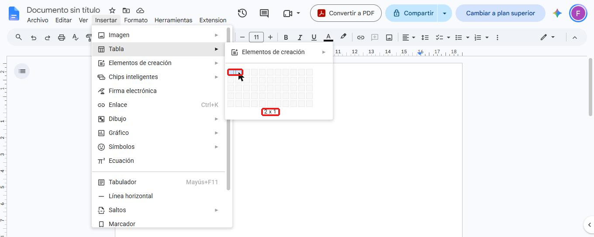
Ajustá el ancho
Arrastrá la línea del medio hacia la izquierda para que esa columna quede más angosta.
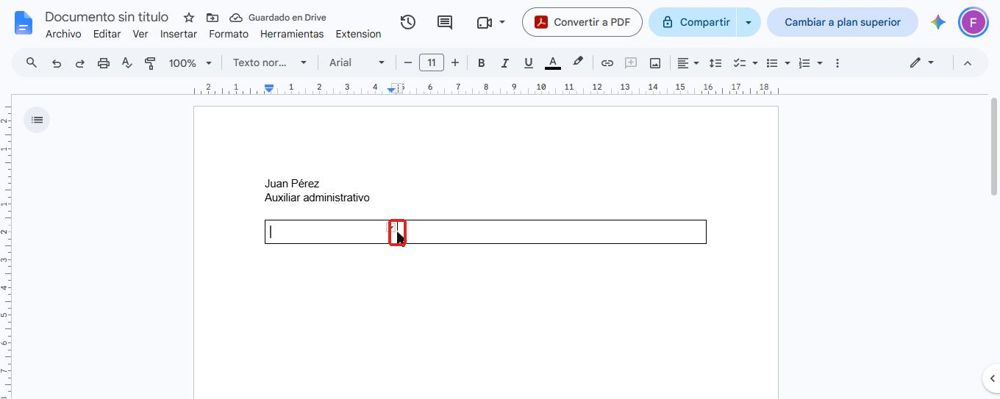
Escribí el contenido
Izquierda: contacto, educación, herramientas, cursos e idiomas.
Derecha: perfil y experiencia.
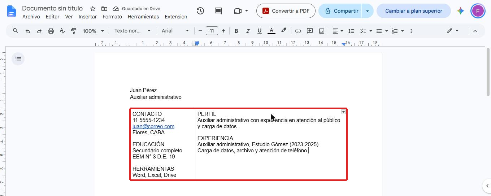
Pintá la columna izquierda
Hacé clic en la celda de la izquierda. En la barra de herramientas tocá los tres puntos ⋮ y elegí el balde de pintura (color de fondo de la celda).
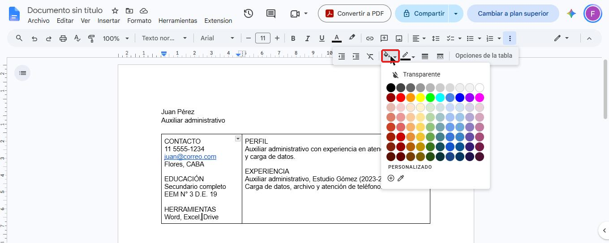
Sacá los bordes
Menú Formato > Tabla > Opciones de tabla. En Color > Borde de la tabla, abrí el grosor y elegí 0 pto.

Listo
El CV queda sin bordes y en una sola hoja. Para enviarlo: Archivo > Descargar > PDF.
Antes de empezar
Se arma con una tabla de 1 fila y 2 columnas. Cada lado queda fijo, elegís el ancho de cada columna y al final se sacan los bordes.
Nombre y puesto
Escribí arriba tu nombre y el puesto.

Insertá la tabla
Pestaña Insertar > Tabla. Marcá 2 columnas y 1 fila en la cuadrícula.
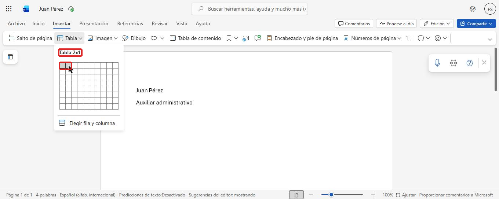
Ajustá el ancho
Arrastrá la línea del medio hacia la izquierda para que esa columna quede más angosta.

Escribí el contenido
Izquierda: contacto, educación, herramientas, cursos e idiomas.
Derecha: perfil y experiencia.

Pintá la columna izquierda
Hacé clic en la celda de la izquierda. En la pestaña Diseño de tabla, usá Sombreado.
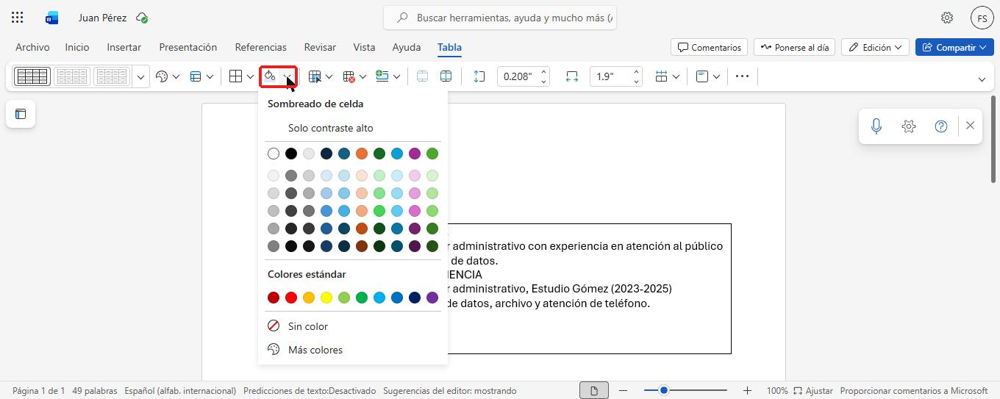
Sacá los bordes
Hacé clic en la tabla. En la pestaña Diseño de tabla, abrí la flecha de Bordes y elegí Sin borde.

Listo
El CV queda sin bordes. Revisá que entre en una sola hoja.
Menús verificados en la ayuda oficial: Google Docs · Word, insertar tabla · Word, quitar bordes
Cuatro modelos para copiar
Tocá cada CV para verlo en grande.
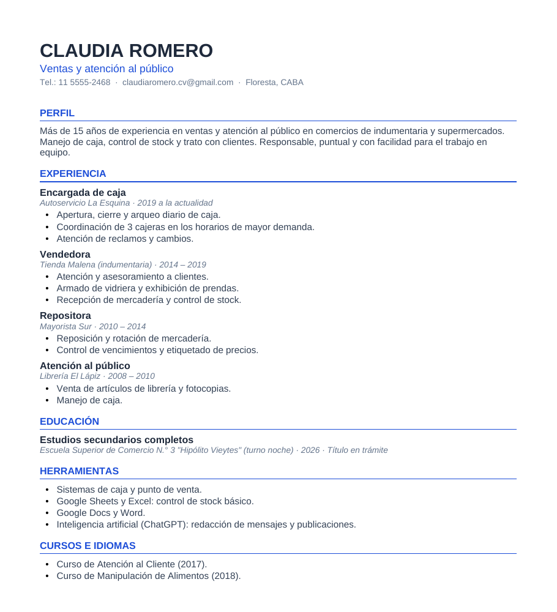
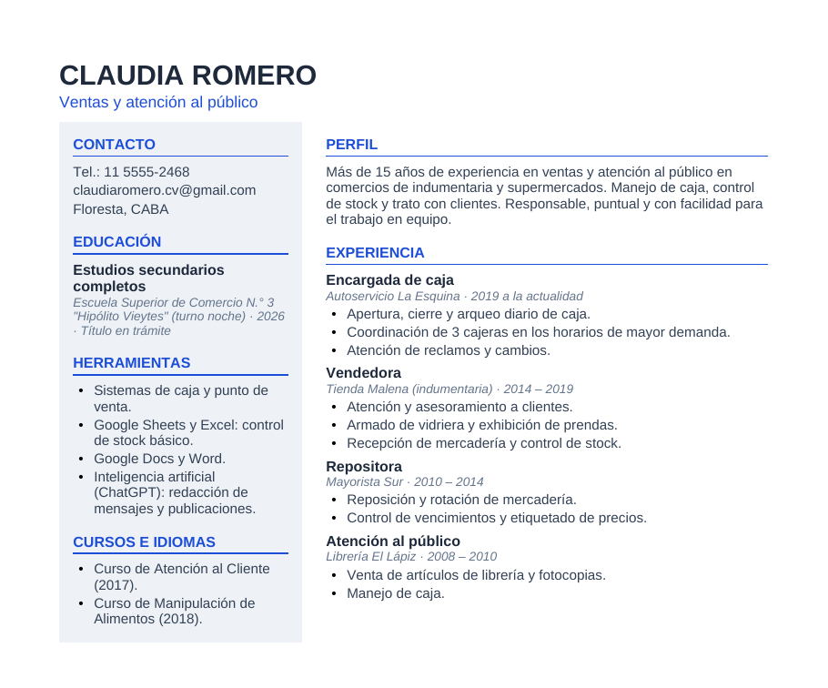

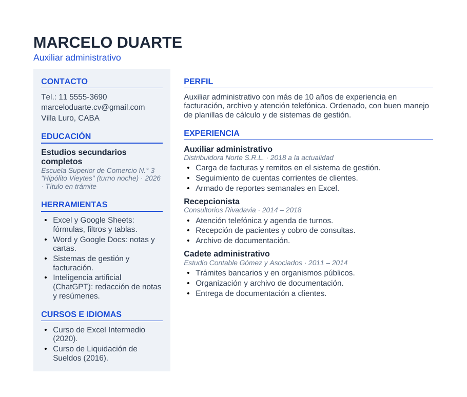

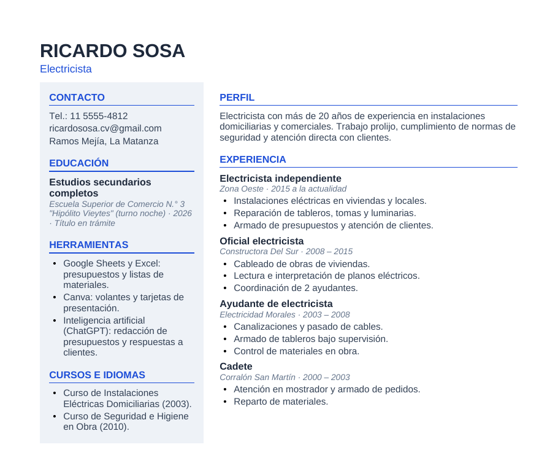
Antes de enviarlo
La foto del CV
- Fondo simple.
- Buena luz, de frente.
- De los hombros para arriba.
- Ropa prolija y actitud natural.
- Filtros exagerados y edición excesiva.
- Fotos oscuras o fondos desordenados.
- Selfies informales o recortes de fotos grupales.
Con IA se puede quitar el fondo y ajustar luz y colores. Sirve para pulir la foto, no para crear una versión falsa de vos. En Docs: Insertar > Imagen > Subir del ordenador.
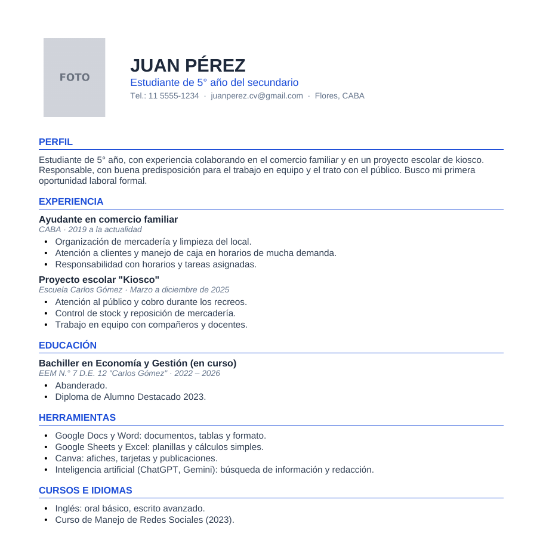

Tu perfil online
Lo que ve quien busca tu nombre.
Correo profesional
Formato nombre.apellido, sin apodos.
Nombre real
En las redes públicas vinculadas a tu búsqueda laboral.
Foto coherente
Prolija, en las plataformas de trabajo.
LinkedIn básico
Recomendable si es relevante para tu rubro. Ver la clase.
La carta de presentación
Acompaña al CV cuando lo enviás.
- Lugar y fecha, a la derecha.
- Destinatario.
- Tres párrafos cortos: el puesto, tu experiencia y el CV adjunto.
- Saludo, nombre, teléfono y mail.
Mejorar el CV con IA
Gemini, ChatGPT o Claude pueden revisarlo y armar dos versiones.
- Subí tu CV a la IA.
- Respondé sus preguntas con datos reales.
- Pedile una versión de una columna y otra de dos.
- Revisá el resultado antes de entregarlo.
Revisá que